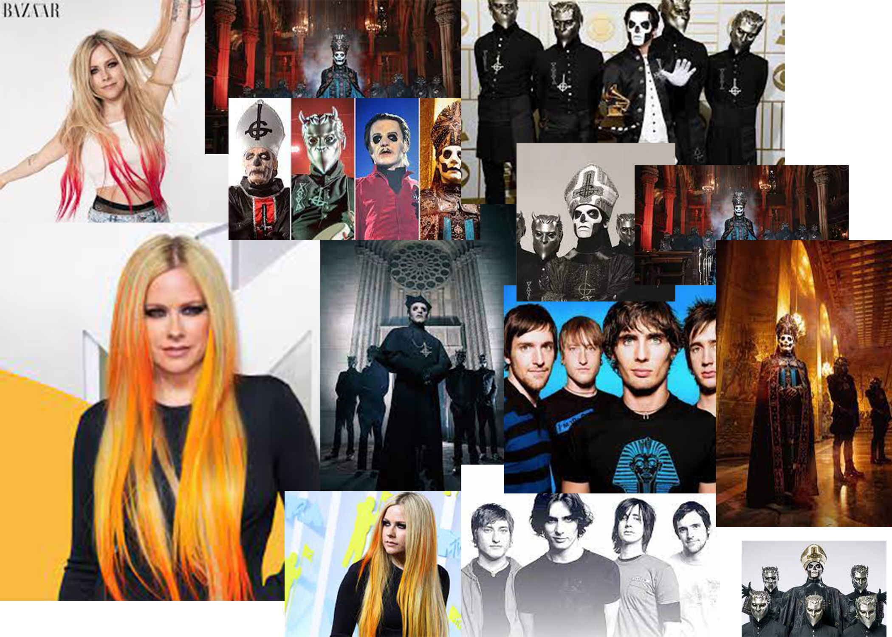

Here's to never growing up from Avril Lavigne came out in 2013. here's to never growing up is one of my favorite songs because no one wants to grow up unless your a kid who really wants to be an adult. Like the song title Here's to never growing up is about Avril Lavigne singing about that she still lives a life like teenagers.

This is Avril Lavigne, the band Ghost, and the band All American Rejects
Uptown girl
to the left is Billy Joel in Uptown girl. On the right is Olivia Rodrigo
What you don't know is that I LOVE THE 80's! One of my favorite songs from the 80's is Uptown girl from Billy Joel. Uptown girl came out in 1983. Uptown girl is the only song from Billy Joel that I know. Uptown girl is about Billy Joel singing about how he likes with girl from uptown and he's from downtown. If you didn't know Olivia Rodrigo's Deja Vu has a small part of Billy Joel's Uptwon girl in it. Later Olivia Rodrigo join Billy Joel in a concert singing Deja Vu and Uptown girl.
Hey Mickey
This is Toni Basil the person who sang Hey Mickey
Hey Mickey came out in 1981. Hey Mickey by Toni Basil not Baby Tate is about a girl who really like this guy. You might have heard the song Hey, Mickey! By Baby Tate but if you don't know Hey Mickey was first made by Toni Basil in 1981.
Smile
Lastly there is Smile by Avril Lavigne is my 4th favorite song. I like other songs by Avril Lavigne, and one of my favorite songs is Smile from Avril Lavigne. Smile is about gratitude for a special person in her life. Smile came out in 2022. I also like other songs from her though Here's to never growing up and Smile are in my top 4 favorite.
Here's some of my other favorite song no in specific order
Girlfriend (Avril Lavigne)
Sofia (Alvaro soler)
Just somebody that I used to know (Gotye)
Now I should also tell you all about the other songs because I'm just leaving you hanging
Girlfriend
the song girldfriend is about this girl who likes this guy but the guy has a girlfriend. Girlfriend was the first song Avril Lavigne that I heard.
Just somebody that I used to know
You might have seen the brain meme with some of the song in it. Just sombody that I used to know is about confusion you can have after a broken relationship, and the way you can feel emotionally quite up and down. I always have that song stuck in my head a lot
Sofia
Lastly Sofia by Alvaro Soler is one of my favorite songs! You might have heard Sofia by Clairo and if not thats ok! Sofia has been my favorite song for a long time.